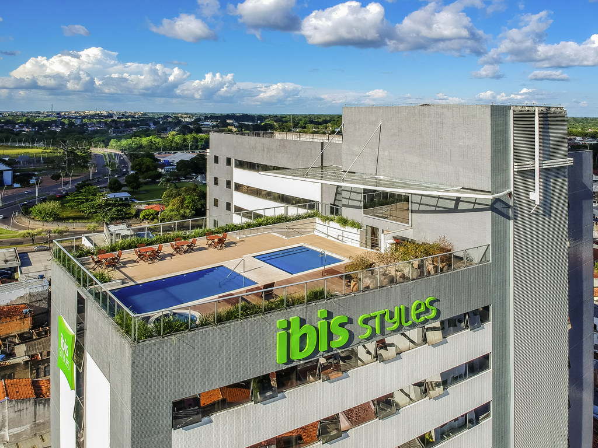
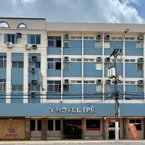
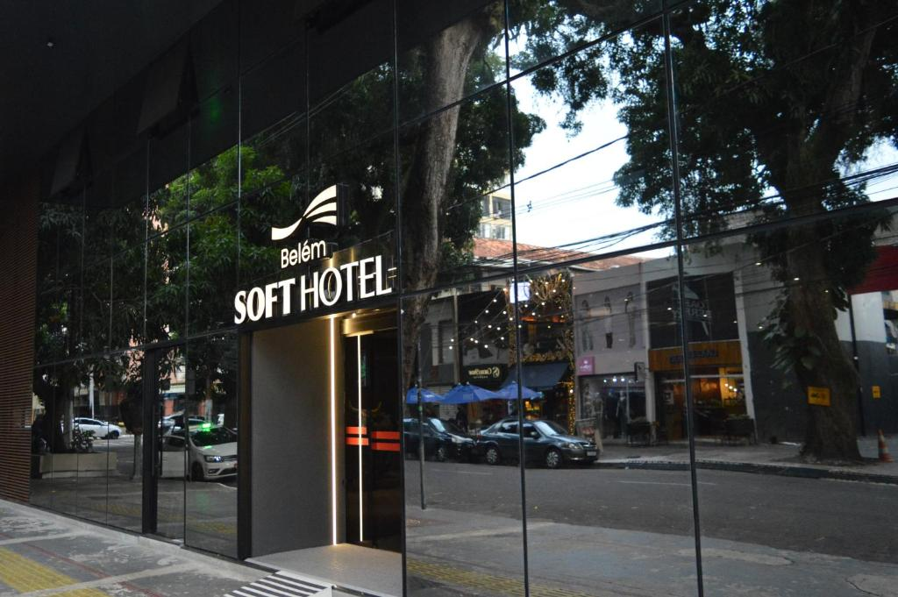

Hotel Ibis
Avenida Gentil Bittencourt, 85, central, próximo ao Shopping Pátio Belém, Mercado Ver-o-Peso e Basílica de Nazaré
A partir de R$227,00 operando 24h
Descubra os melhores pontos turísticos, restaurantes e hotéis para aproveitar ao máximo sua viagem em Belém e sua região.
Descubra os melhores lugares para se hospedar

Avenida Gentil Bittencourt, 85, central, próximo ao Shopping Pátio Belém, Mercado Ver-o-Peso e Basílica de Nazaré
A partir de R$227,00 operando 24h

Av. Governador José Malcher, 2953, no bairro São Brás, em Belém-PA
A partir de R$170,00 operando 24h

O Belém Soft Hotel está localizado na Avenida Brás de Aguiar, 836, bairro Nazaré, Belém-PA
A partir de R$232,00 operando 24h
Descubra os melhores pontos turísticos para visitar em Belém e região

Av. Boulevard Castilho França, s/n - Cidade Velha (próximo ao Ver-o-Peso)
Funcionamento: O horário geral é de domingo a quinta-feira, das 10h às 00h, e sexta-feira e sábado, das 10h às 01h

situada no município de Belém, no estado do Pará, localizada a cerca de 20 a 22 km a noroeste do centro da capital
Como chegar: Para ir à Ilha de Cotijuba, em Belém, o ponto de partida principal é o Terminal Hidroviário de Icoaraci (Rua Siqueira Mendes). A travessia dura cerca de 40 a 45 minutos, feita por navios da prefeitura ou barcos particulares (lanchas), com custos entre R$ 4,00 e R$ 10,00

A Ilha do Combu está localizada no rio Guamá, em frente à cidade de Belém, no estado do Pará, Brasil. É um refúgio natural de fácil acesso, situado a cerca de 10 a 15 minutos de barco a partir da Praça Princesa Isabel, no bairro da Condor, na capital paraense
Como chegar: A principal forma de acesso é pelo Terminal Hidroviário Ruy Barata, localizado na Praça Princesa Isabel, no bairro da Condor O trajeto leva entre 10 a 15 minutos até as primeiras paradas na ilha.
Confira os melhores restaurantes para experimentar a culinária de Belém e região

Localizada no Espaço Cultural Casa das Onze Janelas, na Rua Siqueira Mendes, s/n, Cidade Velha. Oferece vista para a Baía do Guajará.
funciona de terça a sábado, das 11h às 23h, e aos domingos, das 11h às 22h, fechando apenas às segundas-feiras

Localiza-se na Travessa Wandenkolk, número 593, esquina com a Travessa Antônio Barreto, no térreo e terraço
Funciona diariamente a partir das 8h, com happy hour das 12h às 19h, fechando à 00h (qua/qui) ou 01h (sex/sáb)

Está localizado na Avenida Conselheiro Furtado, 1420 - Nazaré (próximo ao CENTUR, que é o estacionamento parceiro).
O restaurante Famiglia Sicilia funciona de segunda a sábado das 18h30 às 23h30 e aos domingos das 11h30 às 15h00.
kkkkkkkkkkkkkk
aaaaaaaaaaaaa
bbbbbbbbbbbbb